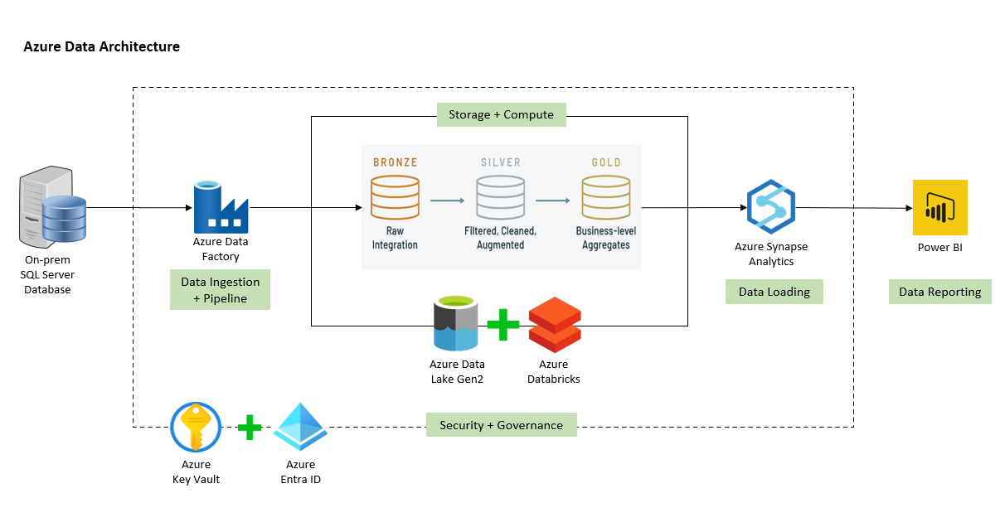
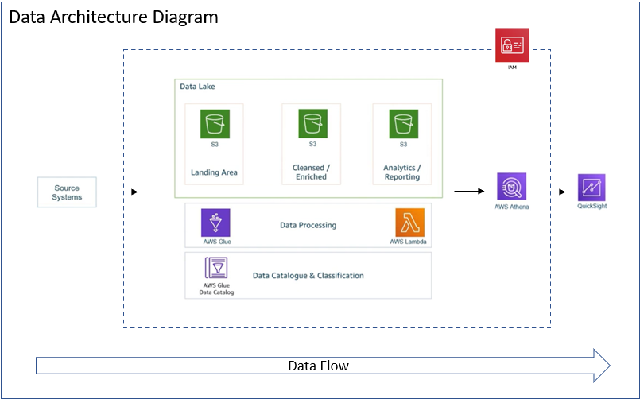

About
I am a data professional with 4.5+ years of experience, currently pursuing an MS in Computer Science at Texas A&M University–Kingsville. Skilled in SQL, Python, cloud platforms (AWS, Azure), and BI tools (Tableau, Power BI), I specialize in building data pipelines, preparing clean datasets, and developing dashboards that transform raw data into actionable insights.
Passionate about using data to improve efficiency and decision-making, I bring a mix of engineering and analytics expertise. My experience spans telecom and healthcare domains, working on ETL pipelines, streaming data, and business intelligence solutions that deliver measurable impact.
Work Experience
Selected roles highlighting engineering and analytics impact.
TruBridge Inc. Remote · Austin, Texas
Data Analytics Intern Jul 2025 – Sep 2025
- Cleaned, validated, and prepared healthcare datasets using SQL and Python to support reporting.
- Assisted in building Power BI dashboards that highlighted trends in claims and billing.
- Supported data validation to ensure reporting accuracy and compliance with standards.
Texas A&M University Kingsville, Texas
Graduate Assistant Jan 2025 – May 2025
- Assisted in teaching Real-Time Systems, helping students connect theory to data-driven applications.
- Created hands-on lab exercises on data pipelines and resource optimization to simplify complex topics.
NCS Group Pune, India
Data Analytics Engineer II (Client: Singtel) Jun 2021 – Nov 2023
- Built and optimized ETL pipelines for high-volume telecom data (JSON, Parquet, AVRO), reducing reconciliation time by 20%.
- Automated SQL/Python workflows to streamline recurring reporting, improving speed and reliability.
- Integrated streaming data pipelines for near real-time analytics, enabling business teams to act 40% faster.
- Designed Tableau and Power BI dashboards to monitor KPIs, network performance, and customer insights.
- Leveraged AWS Glue, Lambda, S3, and Athena to scale data processing and analytics workloads.
Data Analytics Engineer I (Client: Optus) Jun 2019 – May 2021
- Developed and maintained data pipelines for telecom operational data, ensuring accurate and timely availability.
- Automated dashboards and reports to support KPI monitoring and trend analysis.
- Optimized SQL queries and joins, improving reporting performance.
- Migrated legacy scripts into Python workflows, enhancing maintainability and reliability.
- Supported API integrations to deliver analytics to downstream business systems.
Awards
Received the Singtel SPOT Award – Best Team for outstanding teamwork and impactful data analytics contributions.
Education
Texas A&M University Kingsville, Texas
Master of Science in Computer Science (GPA: 4.0/4.0) Aug 2024 – May 2026 (Expected)
Academic Experience: Graduate Assistant for “Real-Time Systems”.
Relevant Coursework: Data Science, Data Mining, Cloud Computing, AI, Database Systems.
Savitribai Phule Pune University Pune, India
Bachelor of Engineering in Information Technology Aug 2016 – May 2019
Activities: Class Coordinator, Presentations, Debate, Anchoring, Badminton, Volleyball.
Projects
Selected data engineering and analytics work.
Food Delivery App Data Analysis Code
Tech Stack: SQL, Python, Pandas, Tableau
End-to-end analysis to uncover trends in customer behavior and operational efficiency. Cleaned and transformed data (Python/Pandas), wrote SQL for KPIs, and built Tableau dashboards for decision support.

COVID-19 India Data Analysis Code
Tech Stack: Python, Pandas, SQL, Jupyter Notebook
Cleaned and analyzed datasets to study case distribution, recoveries, and testing across states/demographics. Presented insights with notebooks to support informed decision-making.
SpotifySync ETL Pipeline Code
Tech Stack: Python, Airflow, Docker, PostgreSQL, Tableau
Automated ETL to ingest Spotify Global Top 50 into PostgreSQL. Orchestrated with Airflow/Docker and visualized streaming trends in Tableau.
AWS ETL Pipeline on YouTube Data Code
Tech Stack: AWS, Python, Spark
End-to-end pipeline using S3, Lambda, Spark, and Athena to process >1M rows of YouTube trending data. Orchestrated in Glue Studio and visualized KPIs in QuickSight.

Skills
Snapshot of data engineering and analytics tools.
Programming & Scripting
- Python, SQL, Java, C++, Shell
Python Libraries
- Pandas, NumPy, Matplotlib, Seaborn, Scikit-learn
Data Engineering & Analytics
- ETL/ELT, Data Modeling, Data Cleaning, Statistical Analysis, dbt
- Orchestration: Apache Airflow, AWS Glue
- Big Data & Streaming: Spark, PySpark, Kafka
Visualization & BI
- Tableau, Power BI, QuickSight, Excel (Advanced)
Databases
- PostgreSQL, MS SQL, MySQL, Oracle, Snowflake, MongoDB
Cloud & Tools
- AWS: S3, EC2, Glue, Athena, Lambda, EMR, IAM
- Azure: Data Factory, Data Lake, Databricks
- Docker, Git, Jenkins, Jira